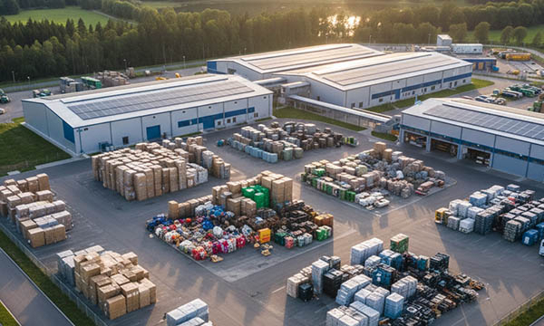

Waste management facilities are essential for maintaining safe, efficient, and environmentally responsible infrastructure across Germany, France, Italy, Switzerland, the United Kingdom, Norway, Austria, Poland, and the Benelux countries (Belgium, Netherlands, Luxembourg). Waste stations process municipal, industrial, and recyclable materials, ensuring proper disposal, recycling, and resource recovery.
Modern waste facilities include sorting lines, compacting systems, recycling equipment, hazardous material zones, and storage areas. These complex operations require careful organization, strict safety standards, and reliable labeling systems to ensure that workers can safely navigate the environment and manage materials efficiently.
Clear identification of waste streams, machinery, hazardous areas, and operational zones is crucial for maintaining regulatory compliance, preventing accidents, and ensuring efficient facility operation.
Safety and Labeling: Essential for Waste Management Facilities.
Waste stations handle a wide variety of materials including recyclables, industrial waste, organic waste, and sometimes hazardous substances. This creates operational risks such as chemical exposure, mechanical hazards, fire risks, and contamination.
Industrial signage, pipe marking systems, safety decals, hazard labels, machine identification plates, and operational signs are critical tools that guide workers and ensure proper procedures are followed.
Durable labeling allows staff to quickly identify waste categories, processing equipment, emergency exits, restricted zones, and safety equipment locations.
SignXpert provides robust industrial signage and labeling solutions designed specifically for demanding environments such as recycling plants, waste processing centers, and municipal waste stations across Germany and Europe.
Efficient Operations and Maintenance in Waste Facilities.
Waste management facilities rely on complex mechanical systems including conveyors, sorting machines, compactors, shredders, and automated recycling equipment. Efficient operation requires clear workflow organization and quick identification of critical infrastructure.
Engraved plates, machine labels, pipe markings, cable markers, and equipment identification tags help technicians and operators maintain efficient workflows and reduce downtime during maintenance procedures.
Clear labeling allows maintenance teams to identify system components quickly, follow safety procedures, and perform troubleshooting with minimal disruption to operations.
Across Germany, Poland, Austria, France, Switzerland, the UK, Norway, and the Benelux countries, proper labeling supports efficient waste processing, improves worker safety, and ensures compliance with EU environmental and safety regulations.
Long-Term Durability in Harsh Waste Processing Environments.
Waste processing facilities expose signage and labeling to dust, moisture, chemicals, vibration, and mechanical stress. Standard labels often degrade quickly in such conditions, making industrial-grade solutions necessary.
Durable engraved plates, stainless steel identification tags, UV-resistant safety decals, and high-contrast pipe markings ensure that critical information remains visible over time.
A well-structured labeling system supports asset management, preventive maintenance, and operational transparency. It also improves inspection efficiency and ensures that facility components remain traceable and properly documented.
Why SignXpert is the Trusted Partner for Waste Management Labeling.
SignXpert supplies high-quality industrial signage, engraved plates, pipe marking systems, cable markers, machine labels, hazard signs, QR code asset plates, and safety decals designed for waste management facilities.
Our primary focus is Germany, while we deliver quickly and reliably across France, Italy, Switzerland, the United Kingdom, Norway, Austria, Poland, and the Benelux countries.
With our easy-to-use online customization system, waste facility operators can design labels, safety signage, equipment tags, and compliance markings tailored to their operational needs.
Durable materials, precision engraving, and compliance with EU industrial standards ensure that all signage remains readable and reliable even in harsh processing environments.
By choosing SignXpert, waste management facilities gain a reliable partner that enhances safety, improves operational efficiency, supports regulatory compliance, and contributes to sustainable waste management across Europe.